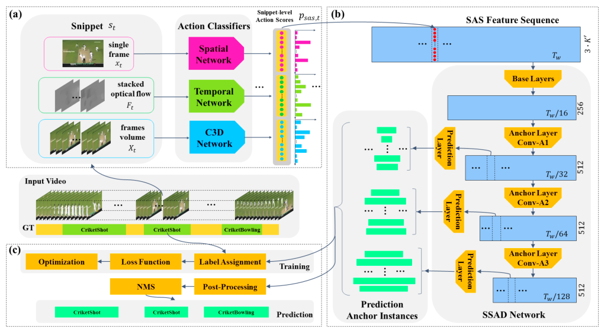

时序动作定位（Temporal Action Localization）总结
定义
在视频序列中确定动作发生的时间区间（包括开始时间与结束时间）以及动作的类别。
分类
按阶段分：
- 多阶段方法：S-CNN、BSN、BMN……
- 端到端方法：SSAD、SS-TAD、GTAN、DBG……
按监督分：
- 强监督方法：以上都是
- 弱监督方法：UntrimmedNet、STPN、CMCS、Background Modeling、BaSNet……
基准数据集
最流行的是THUMOS14和ActivityNet。
两阶段方法
两阶段方法即先提议后分类。这种方法是主流的方法（多数论文都采用）。
- 提取temporal proposals（难点）
- 将其分类以及回归操作
第一步是难点，所以各种方法也都是针对第一步来提出。
对于两阶段的方案存在的问题：
- 由于对候选片段的生成和分类是相对独立的，各个模块训练目标不一致；
- 动作实例的候选片段在分类步骤中已经被固定，前一模块产生的偏差可能影响后一个模块，造成误差的累积。
SLIDING WINDOW (S-CNN, 2016)

S-CNN：固定一定大小的滑动窗口来生成不同大小的视频片段，然后通过多级网络(SegmentCNN)对其进行处理。
SCNN包括三个使用C3D网络的子网络：
- proposal网络。确定当前划分的视频片段（segment）是一个动作（action）的可能性。
- 分类网络。对视频片段进行分类。
- 定位网络。其输出是分类的概率。
理论上，窗口滑动的重叠度越高，效果越好，但是计算量也大。所以用非极大值抑制（NMS）去除重叠段。
缺点：滑窗法不能处理不同长度的视频动作；密集的滑窗计算量太大。
时序动作组合 TEMPORAL ACTIONNESS GROUPING (TAG, 2017)

滑窗法不能处理不同长度的视频动作。为了生成一个proposal，提出了TAG网络。TAG网络分为3步：
- 提取片段（snippets）：每个snippet包含一个视频帧和光流（ optical flow）信息；snippet是均匀获取的；用TSN的稀疏采样方法采样。
动作判断（Actionness）：给snippet打分，确定每个snippet是否含有任何动作。用到二分类网络TSN（Temporal Segment Network）。
组合（Grouping）：依据输出的snippets序列的概率，对高概率的连续snippets进行组合，同时设置多组阈值来删除低概率的snippets。
在THUMOS2014上IOU=0.5时候MAP=28.25。
优点：对边界的处理更灵活；减少了proposal数目，减少计算量；合并片段是自底向上的，更加精确；设置多个阈值组合，可以不需改变参数的训练。
缺点：分类错误的话，会错过一些proposal。
时序单元回归网络 TEMPORAL UNIT REGRESS NETWORK (TURN TAP 2017)

该方法将视频分成固定大小的单元（unit），例如16帧为一单元。然后将每个单元放入C3D中提取水平特征。相邻单元构成一个片段（clip），并让每个单元作为锚定单元（anchor unit）构成片段金字塔，然后在单元上执行时序坐标回归。
网络包含两个输出：
- 确定片段（clip）是否包含动作的置信度
- 调整时序坐标边界的偏移量
该方法的贡献：
- 一种利用坐标回归生成时序proposal片段的新方法。
- 快（800fps）。
- 提出了一种新的评价指标AR-F。
边界敏感网络 BOUNDARY SENSITIVE NETWORK (BSN, 2018)

BSN步骤：
- 首先确定时序动作片段的边界，并将其此片段直接作为proposal。
- 对每个候选proposal，基于动作序列的置信度，提取32维的proposal级别的特征。
- 最后，根据所提取的这些特征，评估这些proposal的置信度。
优点：
- 框架：提出了一种全新的且非常有效的时序提名生成框架，能够产生满足(1)时长灵活(2)边界准确(3)评分可靠的时序动作提名；
- 灵活性：BSN方法的模块非常简单且灵活，能够灵活地应用于不同的垂类场景。
缺点：
- 效率不够高：提名特征提取以及置信度评估的过程是对每个时序提名逐个进行的，虽然可以在一定程度上做并行加速，但总体上还是效率比较差；
- 语义信息丰富性不足：为了保证提名特征提取过程的效率，BSN中所设计的32维提名特征是比较简单的，但也限制了置信度评估模块从特征中获得更加丰富的语义信息；
- 多阶段：BSN方法是一个多阶段的方法，没有将几部分网络联合优化。
边界匹配网络 BOUNDARY-MATCHING NETWORK (BMN, 2019)
为了解决BSN的不足所提出。BMN网络能够同时生成与BSN中类似的一维边界概率序列，以及二维的BM置信度图来密集的评估所有可能存在的时序提名的置信度分数。
右下角三角形区域的解释：提名的结束时间超出了视频的范围，不被纳入考虑。

BMN主要包括3个模块：
- 基础模块：包括两个1d卷积层，处理输入的特征序列，并输出被后续两个模块所共享的时序特征序列。
- 时序评估模块：包含两个1d卷积层，输出开始概率序列和结束概率序列，用于后续的提名生成。
- 提名评估模块：包含了前面介绍的BM layer，一个3d卷积层以及3个2d卷积层，最终输出为BM置信度图。
网络生成时序边界概率序列后，产生候选时序提名；并从二维置信度图中取出对应的置信度分数，用于最后的时序提名排序。
最后用了Soft-NMS方法去除冗余结果。
优点：效率比BSN更高；
一阶段（端到端）方法
这种方法同时处理proposal和分类。
End-to-end Learning of Action Detection from Frame Glimpses in Videos [2016 CVPR]
视频动作检测任务中的第一个端到端方法。用了强化学习的思路。
该模型有一个基于递归神经网络的agent，它随着时间的推移与视频交互。agent观察固定比例的视频帧，并决定下一步在哪里看以及何时发出预测。

总体流程
在某一步n中，agent观察橙色视频帧并产生3个输出：$(d_n, p_n, l_{n+1})$，分别表示（候选检测结果，预测指标，下一处观察位置）。其中，预测指标$p_n$输出“是”或“否”，指示$d_n$可否被作为一个预测结果被提交；候选检测结果$d_n$包括$(s_n, e_n, c_n)$，分别表示正则化开始、结束位置和该候选的置信度。
在上图中，$p_n$输出“否”，因此不被动作预测集接受。同时agent在n+1步中移动到$l_{n+1}$的位置，即绿色视频帧的位置，并继续产生3个输出：$(d_{n+1}, p_{n+1}, l_{n+2})$。此时$p_{n+1}$仍不被接受，因此agent在n+2步中移动到$l_{n+2}$的位置，即蓝色视频帧的位置。这次的$p_{n+2}$被接受，因此将该候选结果输入到动作预测集，同时agent继续下一步。
优点：只需要观察很少数的视频帧（2%甚至更少）
SSAD（single shot temporal action detection，单镜头时序动作检测）
结合了在目标检测中的YOLO和SSD模型的特性。

缺点：虽然不是像S-CNN那样固定了滑窗，但是bbox的大小实际上还是由人为事先规定的；效率可能不是很高，因为会生成很多的bbox。
SS-TAD（end-to-end, single-stream temporal action detection，端到端，单流时序动作检测）
利用时序动作定位的语义子任务作为调整后的语义约束（semantic constraints）来提高训练和测试性能。

优点：效率上比SSAD更好。
GTAN（Gaussian Temporal Awareness Networks，高斯时序感知网络）
引入高斯核函数（Gaussian kernels），动态优化每个动作proposal的时序范围。

弱监督方法
见另一个文件。
总结和想法
- 通过梳理和总结，现在对各种好的思路和方法有了比较清晰的了解。
- 端到端的时序动作定位方法
从目标检测的发展进程来看，在目标检测算法的发展与落地应用过程中，往往单阶段算法可以在推理速度与模型大小中有着更大的优势。模型结构也往往更加简单。
多阶段的方法往往由多个独立的模块组成，每个步骤结果的好坏会影响到下一步骤，从而影响训练结果，同时需要较为高昂的标注成本，因此端到端的方法更具有实用价值。现有的方法中，两阶段的方法，如R-C3D，评估不同尺度的proposal用的是共享特征，而时间段的范围和anchor的跨度不对齐，难以解决时间段的变化比目标检测的区域变化范围更大的问题。聚合动作性分数的方法，如SSN，TAG，ETP，CTAP由于其感受野的限制，会使得在时间跨度较大的数据集上表现不佳。基于边界的方法，如BSN，BMN，BSN++需要先使用骨干网络提取视频中的特征，保存后再使用特征进行训练和测试，并且只产生proposal在实际应用中价值有限。
- 弱监督的时序动作定位方法
弱监督时序动作定位的标签只提供实例的类别信息，需要网络自身去猜测动作的起止时间，问题定义更加复杂，但是实用价值更高，因此有不少研究人员将目光聚焦于弱监督时序动作定位中。主流的弱监督时序动作定位算法通过预测视频片段的动作概率，通过融合得到整个视频的概率输出，然后通过注意力模型得到每个视频片段对应的注意力权重。在测试阶段，通过注意力权重筛选视频片段，去除不包括动作的片段。
- 充分利用上下文信息
在时序动作定位任务中，视频包含丰富的上下文信息。如在背景片段中，往往包含场景信息，充分利用上下文信息将有助于对应场景动作的检测。
为了充分利用上下文的信息，一些方法如TCANet，BSN++，使用自注意力对时序以及空间关系建模，寻找特征的全局依赖关系，自注意力模块会消耗大量的计算资源，降低方法的实用性。一些方法，如TCN,TURN,TSN，按照预定义比例扩展动作时间边界以利用视频上下文信息，TAL-net使用空洞卷积编码上下文信息,但这些方法只是简单的利用了时序方向的上下文，在动作的时序领域中扩展边界，现实中的动作在时间范围，动作内容都有较大差异，这些方法无法充分利用视频中丰富的上下文信息。另一部分方法如P-GCN，使用图卷积网络学习proposal之间的依赖关系，在生成proposal时使用了聚合动作性分数的方法，存在感受野受限的问题。
下周计划
- 周一又开学了，不在校也要尽量保持在校的状态。
- 这学期有些好的论文虽然看过了，但是还没有来得及做实验。继续写代码做实验。
- 继续调研综述中提到的那些思路和方法。